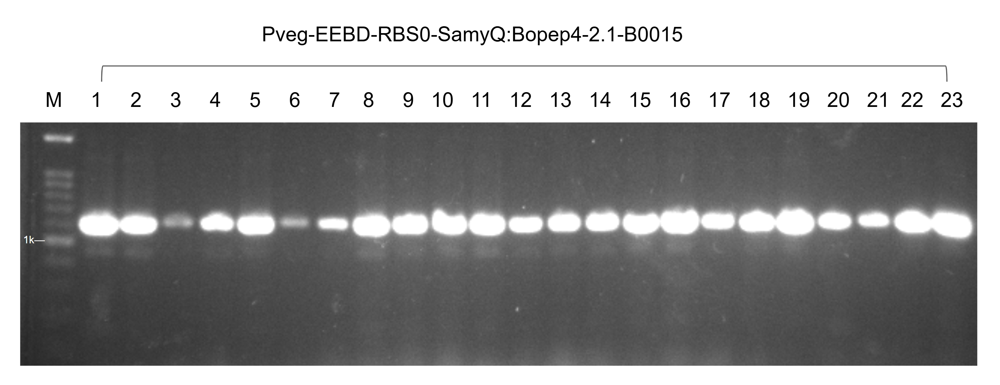

Claim 1 · The cloning worked主張 1 · Cloning 成功了
Build a ladder: a clean entry part, then reproducibility, then the Level 2 device.搭一道階梯：乾淨的入門零件 → 可重現性 → Level 2 裝置。

23 of 23 transformants carry the band23 個轉形株全部帶有正確片段
assets/colonypcr-23lanes.png · wiki copy · local original:本地原檔： Engineering Photo/10-21/Group 4/Screenshot 2026-10-18 214722.png
Legend. Colony PCR of twenty-three WB800 transformants carrying Pveg-EEBD-RBS0-SamyQ:BoPep4-2.1-B0015. Every lane shows the band, which is what a count of recovered colonies cannot show on its own.攜帶 Pveg-EEBD-RBS0-SamyQ:BoPep4-2.1-B0015 的 23 個 WB800 轉形株菌落 PCR。每一條泳道都有帶——這是單純計算菌落數無法呈現的資訊。
No expected band size is stated anywhere for this gel, and the build table gives BoPep4 2.1 as 678 bp, which does not match a band sitting above the 1 kb marker. Resolve the expected size before putting a number on screen — or show the gel and say only "every lane positive."任何地方都沒有標示這張膠的預期片段大小，而構築表記載 BoPep4 2.1 為 678 bp，與落在 1 kb 標記之上的帶不符。在畫面上放數字之前先確認預期大小——或者只放膠圖，旁白只說「每一條都是陽性」。

9 of 9 Level 2 junctions correctLevel 2 的 9 個接點全部正確
engineering/gel-260919-level2-acdi-three-clones
Legend. 19 September 2026. Three ACDI clones — X1, X3, X9 — across three junctions: junction B, CcaSm3 F with CcaR R, 632 bp; junction C, CcaR F with Csn R, 661 bp.2026 年 9 月 19 日。三個 ACDI 選殖株 X1、X3、X9，橫跨三個接點：接點 B，CcaSm3 F 配 CcaR R，632 bp；接點 C，CcaR F 配 Csn R，661 bp。
Junctions prove module order, not the 10 kb between them.接點證明的是模組順序，不是中間那 10 kb。

The device is the right size裝置大小正確
engineering/gel-level2-ecori-btsi
Legend. Restriction digest of the Level 2 construct from two independent clones. EcoRI alone linearises the plasmid at the expected 10,293 bp; EcoRI with BtsI cuts to 7,543 bp.兩個獨立選殖株的 Level 2 構築限制酶切。單用 EcoRI 將質體線性化於預期的 10,293 bp；EcoRI 併用 BtsI 切成 7,543 bp。
Visibly a spliced composite of two gel crops with hand-drawn braces — a judge may notice.明顯是兩張膠圖裁切拼接、加上手繪括號的合成圖——評審可能會注意到。
Two corrections before you script this寫這段腳本前的兩項更正
- Do not say "434 colonies." The 434 and 403 counts for AcdS 2.1, and the 370/268/233 counts for the CcaSR circuit, were plated on plain LB with no antibiotic — they are not transformation results. Only the erythromycin plates select, and those give 15, 16, 16, and 337 (AcdS 2.2 at 2.5 kV). Lead with the gels instead. This also corrects the gap audit on the other page.不要說「434 個菌落」。AcdS 2.1 的 434 與 403，以及 CcaSR 線路的 370/268/233，都是塗在沒有抗生素的普通 LB 上——那不是轉形結果。只有紅黴素盤具篩選性，其數字為 15、16、16 與 337（AcdS 2.2，2.5 kV）。請改以膠圖為主。這同時更正了另一頁缺口盤點中的說法。
- Sequencing exists, but not where it matters most. Level 0 entry parts and module rebuilds were Sanger-verified, and sequencing caught false positives that gels had passed. But the wiki states plainly: "No Level 2 construct has been sequenced end to end… the build record's Level 2 sequencing cell is empty for both devices." If asked, say that.定序是有的，但不在最關鍵的地方。Level 0 入門零件與模組重建都做了 Sanger 定序，而且定序抓到了膠圖放行的偽陽性。但 wiki 明白寫著：「沒有任何 Level 2 構築做過端到端定序……建構記錄中兩個裝置的 Level 2 定序欄位都是空的。」被問到就這樣回答。